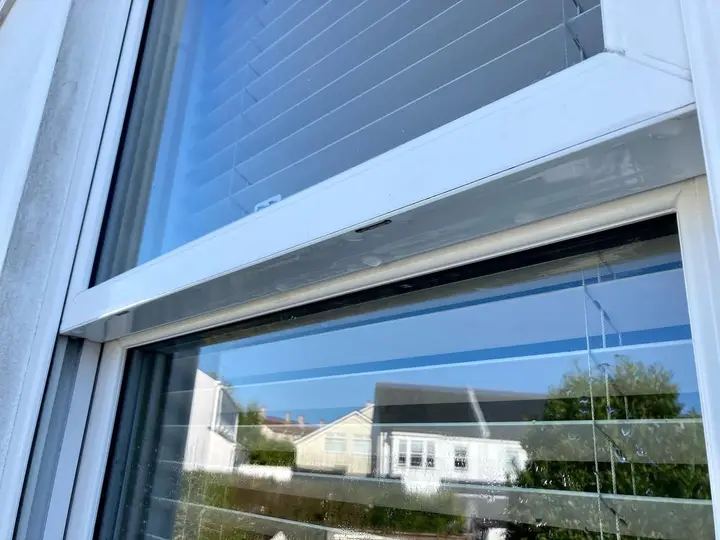

Window cleaningWindow cleaning
The service V1 is built on: reliable, friendly, and done properly — the traditional way, or with the more advanced water-fed pole.
- Traditional window cleaning
- Water-fed pole cleaning, the more advanced method
- One-off deep cleans or a regular monthly round
“I could see he was taking his time to make sure my windows were gleaming! I’ve never seen them so clean!!”Emilie C.
Get a window quote